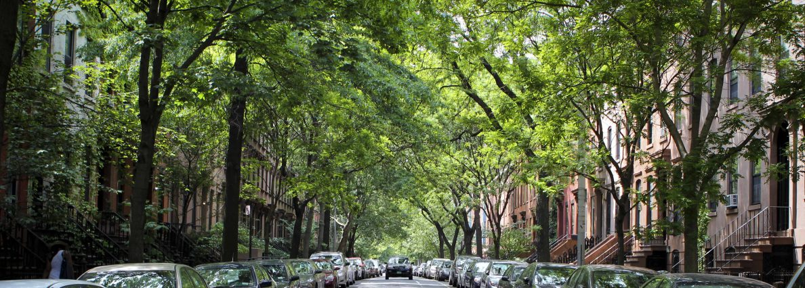
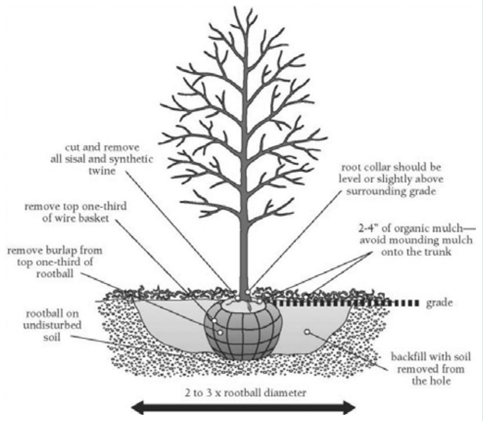

What is an urban tree canopy?
The canopy of a tree or group of trees is the area of leaves and branches that create shade under the tree(s). Like umbrellas, trees reduce the amount of sunlight and rain reaching theground. Trees in urban environments are particularly important for intercepting rainfall before it becomes stormwater runoff. Tree leaves, branches, stems, and roots catch falling rain, filter out pollutants, and absorb stormwater.

Image Credit: Pennsylvania's Urban & Community Forestry Council
How can you determine if your property is suitable for planting trees?
To give your new tree enough room for healthy growth and to avoid interference with utilities and structures, be sure to plant it:
- At least 3 feet from underground utilities, fences, walkways, driveways, decks, and patios.
- At least 7 feet from the stems of small trees and shrubs.
- At least 10 feet from overhead utilities and trunks of other large trees.
- At least 15 feet from structures.
Can you do this project yourself?
Yes. Tree planting can be a great opportunity for outdoor activity with family, friends, or neighbors.
Once you have chosen a native tree and a location that maximizes benefits to your property, you can plant your new tree. If you don’t plant your tree immediately, be sure to keep it watered and protected until you are ready. Also, be sure to remove all tags, twine, and wire when you plant it. Dig the hole as deep as the soil in the pot, and three times the width of the pot. As you dig, pile the soil on a tarp so it is easier to shovel up when it’s time to fill the hole in. Carefully slide the tree out from the pot. Wiggle your fingers in the soil until you can gently spread out the bottom-most roots. If roots have encircled the pot, make 4 shallow vertical grooves around the rootball with a soil knife or other sharp tool. Place the tree in the hole, making sure the base of the tree is level with the surrounding ground. To check, lay a shovel across the hole. This will help you see if the tree is too high or too low. Once the tree is level, backfill the soil, firming the soil gently as you go. Check periodically to make sure the tree remains straight. Water thoroughly and you’re done!

Image Credit: Department of the Environment, Prince George's County
soil
Some soils surrounding buildings are compacted and lack healthy soil organisms that trees require to thrive Soil that is hard and dense may not contain the tiny air pockets that tree roots need to grow and take in water and nutrients. It may be necessary to amend the soil in and around the new tree pit by adding compost to provide looser soil and re-establish the soil ecology.
A quick way to assess compaction is to take a large screwdriver and see how far you can push it into the soil without pounding.
- Perform this test when the ground is dry, since wet soil is easier to penetrate.
- Next ,you want to see what soil texture you have. Do you have sandy soil or heavy clay? To learn how to perform your own simple soil texture analysis visit this site.
- Finally, consider the moisture. Is your soil dry? (water does not remain after a rain) Is your soil wet? (soil holds water for days after a rain) Or, is it in between? (moist) Now that you know what kind of soil you have, you can select trees that like those conditions.
Which other techniques work well with planting urban trees?
Tree planting works well with most other stormwater reduction techniques, such as cisterns, and rain gardens.
Text cited from Prince George’s County, Rain Check Rebate Program.
- For more implement and maintenance information, please go to check this link.
- You can find right type of tree here for your yard.
- Find recommended tree list here in Maryland.
- You can also check rebates here.